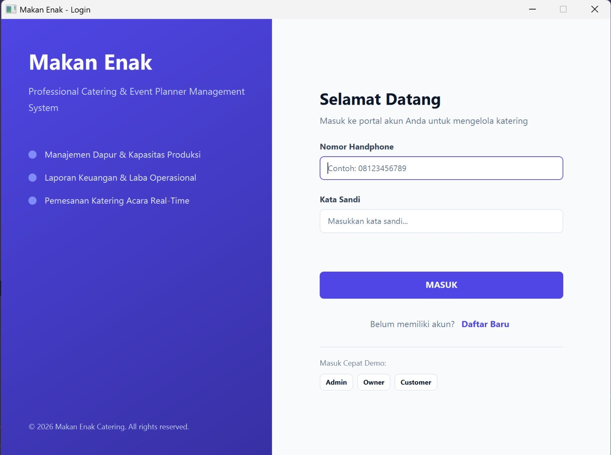
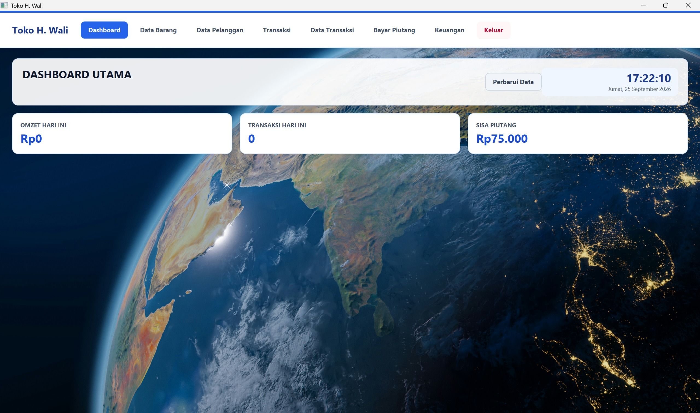
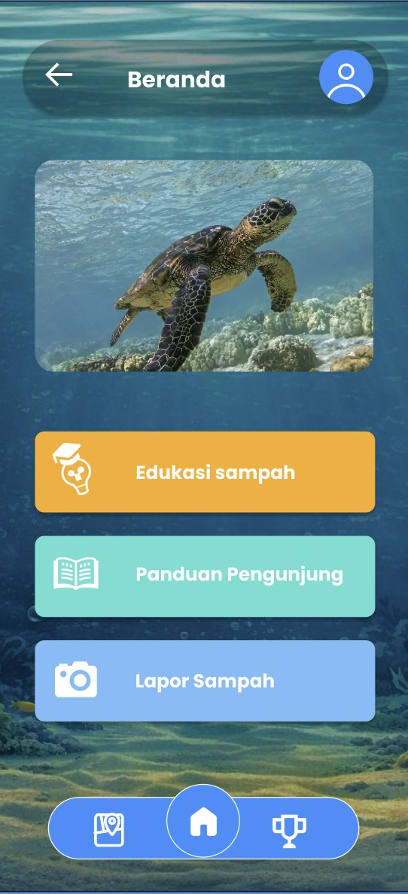

Halaman profil pribadi
Saya sedang mengembangkan halaman profil pribadi menggunakan HTML, CSS.
Dimulai .
Mahasiswa Informatika Universitas Islam Indonesia Semester 3.
Saya adalah mahasiswa Program Studi Informatika di Universitas Islam Indonesia. Saya tertarik pada bidang IT, khususnya pemrograman dan problem solving. Saya juga sedang mempelajari pembuatan website.
| Kegiatan | Peran | Waktu |
|---|---|---|
| Perkuliahan Informatika | Mahasiswa | |
| Belajar Pemrograman Dasar | Pembelajar Mandiri | |
| Latihan HTML, CSS, dan java | Pembelajar Mandiri |
Isi formulir berikut. Semua kolom bertanda wajib harus diisi.



Saya sedang mengembangkan halaman profil pribadi menggunakan HTML, CSS.
Dimulai .
Saya sedang mempelajari Java, HTML, CSS, dan problem solving.
Saya pernah membuat sistem aplikasi catering, aplikasi kasir, dan tampilan aplikasi TrashVision.